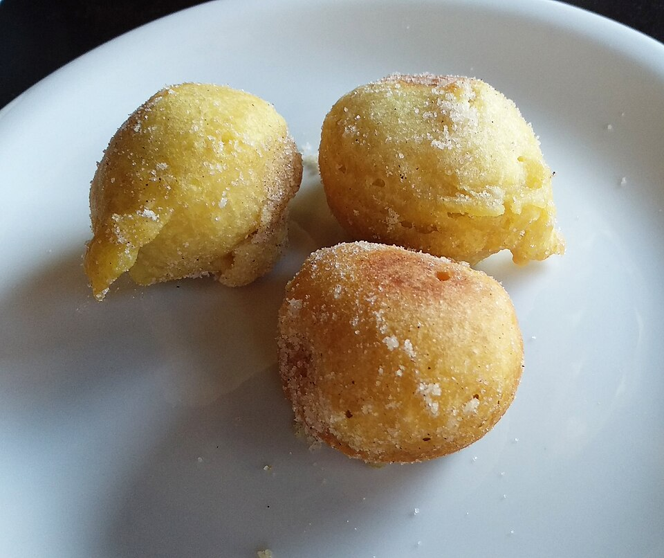

Doces · Outros doces
Bolinho de chuva (receita de avó)

Ingredientes
- 1 xícara de farinha de trigo
- 3 colheres (sopa) de açúcar
- ½ colher (chá) de fermento
- ½ xícara de leite
- Óleo para fritar
- Canela e açúcar para polvilhar
Modo de preparo
- Misture tudo até ficar homogêneo.
- Frite em formato de bolinhas no óleo bem quente.
- Polvilhe com canela e açúcar.
Observação
Receita de avó, em versão pequena (bem simples). Outra versão, com ovos, está em “Bolinho de chuva”. Fonte: Pinterest (by becapriber).